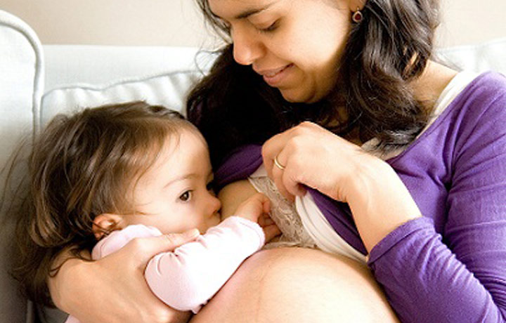
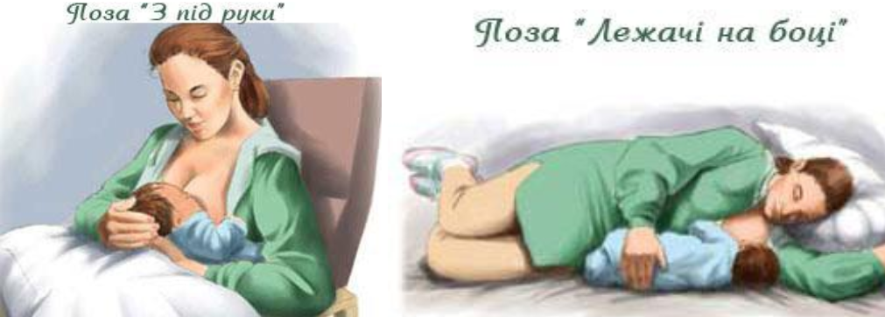

Автор: Ольга Колодка
Можливо, Ви годуєте грудьми старшу дитину і виношуєте нове життя. А, може, щойно мрієте про ще одну дитину, але до відлучення Вам ще далеко. Якщо так, то, мабуть, замислюєтеся над доцільністю і безпекою такого кроку.
Розглядаючи можливість продовжувати грудне вигодовування старшої дитини під час наступної вагітності, необхідно усвідомлювати свою мотивацію і зважити на час, який минув від попередніх пологів. Найчастіше лікарі називають інтервал між вагітностями тривалістю 2-3 роки як мінімальний необхідний для повноцінного відновлення організму жінки. Проте якщо вагітність настала раніше, теж є всі підстави для її сприятливого перебігу. А окрім того, важливо мати відповідь ще на ряд практичних питань.
Найперше і, напевно, найголовніше – це безпека дитини в утробі. Чи не вплине грудне вигодовування негативно на перебіг вагітності?
Медики нерідко хвилюються, чи не спровокує гормон окситоцин, який активно синтезується під час лактації, передчасні пологи або викидень. Але наукові дослідження довели, що навіть висока доза синтетичного окситоцину не в змозі викликати родову діяльність, поки організм не готовий до пологів. До 38 тижня матка малочутлива до нього (Kimura T, Takemura,M., Nomura, S., et al. Expression of oxytocin receptor in human pregnant myometrium. Endocrinology 137:780-785. 1996.). Під час вагітності окситоцин у відповідь на стимуляцію сосків виділяється у меншій кількості, ніж у невагітної жінки. А пильний погляд на молекулярну біологію вагітної матки виявляє цікавий механізм захисту від передчасних перейм, спровокованих окситоцином. По-перше, кількість рецепторів окситоцину (клітин матки, які виявляють його наявність) під час вагітності є відносно невелика, але зростає в 300 разів перед самими пологами. По-друге, для того, щоб ці рецептори в достатній мірі реагували на окситоцин, вони потребують допомоги спеціальних агентів, які називаються «щілинними контактами», або “нексусами”. Відсутність нексусів робить матку нечутливою до окситоцину навіть тоді, коли кількість рецепторів окситоцину висока. По-третє, природні окситоцин-блокатори, особливо прогестерон, стоять між окситоцином і його рецепторами протягом вагітності. Таким чином, вагітна матка не реагує на окситоцин. Скорочення матки, які жінки відчувають на пізніх термінах, цілком безпечні. Це тренувальні перейми, які готують матку до пологів. (Flower, Hilary. Adventures in Tandem Nursing: Breastfeeding During Pregnancy and Beyond. La Leche League International, Schaumburg, Illinois, 2003.)
Також матері часто хвилюються, чи не позначиться грудне годування негативно на розвитку немовляти?
Справді, кожній вагітній чи годуючій жінці необхідне достатнє і збалансоване харчування. А особливо важливо це при поєднанні цих факторів. Але поживні речовини не потрапляють безпосередньо в молоко. Вітаміни і мінерали надходять у кровоплин, і таким чином вони постійно і постачаються через плаценту до малюка, а в молоко ці речовини потрапляють лише в моменти синтезу молока, а це не є безперервно. Брак певних вітамінів чи мікроелементів в першу чергу позначається на самопочутті матері, отже, якщо мати почувається добре, то і дітей вона забезпечує в достатній мірі. Опитування 57 матерів, які протягом деяких або всіх вагітностей годували дітей грудьми, засвідчило, що діти, народжені від цих матерів, мали здорову вагу при народженні (Moscone SR, Moore MJ. Breastfeeding during pregnancy. J Hum Lact. 1993 )
Що означає «достатнє харчування» в такому разі? Крім того, що їжа має бути різноманітною, вона має бути також і калорійнішою - жінці рекомендовано додатково вживати 650кал/день, якщо вона вигодовує немовля до 6 місяців (виключно гв) або 500кал/день, якщо дитина їсть прикорм. Крім того, протягом вагітності вона також потребує додаткових калорій для виношування маляти в утробі – 359кал/день додатково в 2 триместрі і 450 кал/день у 3 триместрі.( Walters, Sara. Breastfeeding During Pregnancy. NEW BEGINNINGS, Vol. 25, No. 1, January-February 2008, pp. 32-33 http://www.llli.org/nb/nbjanfeb08p32.html )
Було проведено клінічні дослідження, які підтвердили, що грудне вигодовування не є причиною викиднів, низької ваги при народженні та передчасних пологів (Madarshahian and Hassanabadi 2012 http://www.ncbi.nlm.nih.gov/pubmed/22333968 в Іраку, Ishii 2009 в Японії, Aibadran 2013 в Іраку, Ayrim 2014 в Туреччині).
Окреме питання, яким переймаються матері, - це склад грудного молока під час вагітності. В першій половині вагітності молоко відповідає віковим потребам дитини, яка годується ним. Приблизно з 4 місяця груди починають виробляти молозиво. Не треба хвилюватися, що тодлер «вип’є все молозиво, призначене немовляті». Після пологів знижується рівень прогестерону в організмі, натомість підвищується рівень пролактину, і кількість молозива і молока буде достатньою, щоб забезпечити і старшу, і молодшу дитину. В цей молозивний період можлива зміна консистенції випорожнень старшої дитини – адже молозиво є природнім проносним засобом. Це нормально і не свідчить про жодні кишкові проблеми.
Приймаючи рішення годувати під час вагітності, потрібно враховувати труднощі, які можуть бути з цим пов’язані, і знати, як впоратися з ними. Найчастіше жінки скаржаться на надзвичайну чутливість сосків та ареол під час вагітності і, як наслідок, біль під час годування. Шлях до вирішення цієї проблеми – налагодження правильного прикладання дитини до грудей і вибір зручної позиції, адже правильно прикладена дитина не смокче сосок, а давить на ареолу, тому болю при годуванні не відчувається або він суттєво зменшується. Навіть діти, які бездоганно прикладалися в перші місяці життя, з віком починають відволікатися, недбало захоплювати груди, і вагітні це вмить відчувають. Буває, що біль відчувається лише в перші секунди прикладання, це спонукає жінку відволікати дитину між годуваннями, збільшуючи інтервали. Іноді матері скаржаться на біль лише під час тривалих годувань – це наслідок того, що дитина, добре прикладена спочатку, сповзає на сосок в процесі годування. І це можна виправити, скоригувавши прикладання, часом з дитиною можна домовитися про обмеження тривалості кожного прикладання.
Іноді причина болю сосків криється не лише в гормонах вагітності - варто звернути увагу, чи вживає жінка достатньо рідини (30 мл/кг ваги жінки за добу), а також має значення загальний стан шкіри (під час вагітності збільшується потреба організму в поліненасичених жирних кислотах,однією з ознак їх нестачі є вразливість шкірних покривів, зокрема, на сосках та ареолах. Це можна спробувати виправити за допомогою корекції харчування.) А крім того, чому б не скористатися народними засобами (наприклад. прохолодні компреси з відвару ромашки чи кори дуба)?
Окрім болю, під час вагітності можуть з’явитися інші прояви дискомфорту під час годування (загострення токсикозу в 1 триместрі, нудота чи запаморочення в процесі годування). Це явище зазвичай тимчасове і минає разом з токсикозом. Полегшити стан можна за допомогою зміни раціону.
Часом дискомфорт при годуванні може мати психологічну складову - під впливом соціальних стереотипів жінка може підсвідомо бажати завершення годування і відокремлення від дитини, до того ж їй може хотітися “зануритися у вагітність”, зосередити всю свою увагу на немовляті, яке має народитися. Особливо це актуально для тих, хто годує малюків після року. Це може бути поштовхом переглянути рамки стосунків з дитиною, новою сходинкою в процесі відокремлення дитини від матері.
Вагітній матері важливо вибрати зручну позу для годування, щоб уникнути тиску на живіт. Наприклад, можна годувати з-під руки або лежачи на боці.

У 2 триместрі, приблизно на 20-23 тижні, через вплив «гормону вагітності» прогестерону, можливе тимчасове зниження синтезу молока, т.зв. «сухий період». Молоко може і дещо змінити свій смак. Це не становить жодної небезпеки, проте може посприяти відмові дитини від годування. Навіть якщо так сталося, годування може відновитися після народження братика чи сестрички. Так стається далеко не завжди, декому перестає подобатися смак, а також дитина може втратити навик добування молока з грудей, проте навіть за такої обставини може годуватися на припливах, коли молоко витікає саме.
Якщо жінка вирішила годувати свою дитину під час вагітності, але не готова до тандему, саме плавне відлучення в самій середині вагітності вважається найсприятливішим варіантом. По-перше, зміна смаку і кількості молока може підштовхнути і дитину до цього кроку. По-друге, відлучати в 1 триместрі, особливо різко припинити годування, є небезпечно через високий ризик переривання вагітності. Адже вагітність сама по собі несе гормональні зміни для організму. Стреси та нездужання на ранньому терміні можуть зашкодити вагітності або і припинити її, а відлучення – це окремий гормональний стрес. Депресивний настрій, втома, перепади тиску, алергічні реакції, зміна стану шкіри – це лише деякі з можливих реакцій організму матері на форсоване відлучення. Тому, прийнявши рішення відлучити дитину від грудей в період вагітності, слід робити це м’яко, поступово зменшуючи кількість прикладань (найлегше почати з денних, а останніми забрати годування, пов’язані зі сном), розтягуючи в часі на кілька місяців (тому перші кроки в цьому напрямку мають бути значно раніше, на самому початку вагітності, а якщо є можливість, то і на етапі планування). Відлучення ж у 3 триместрі є наближене в часі до пологів, тому може асоціюватися у дитини з появою молодшого члена сім’ї, таким чином даючи додатковий привід для ревнощів. Звісно, надзвичайно важливо в період відлучення дати дитині ще більше уваги та турботи, старатися компенсувати ці миті близькості іншими приємними ритуалами.
Хоч би яке рішення Ви прийняли, прийняте свідомо, з урахуванням різносторонньої інформації, саме це рішення буде для Вашої сім’ї оптимальним на цей момент і дозволить найкраще потурбуватися про своїх дітей.
Ольга Колодка,
консультант з питань грудного вигодовування
Photo of Paala Secor,-Photo credit: Nicole diGiorgio of Sweetness and Light Photography